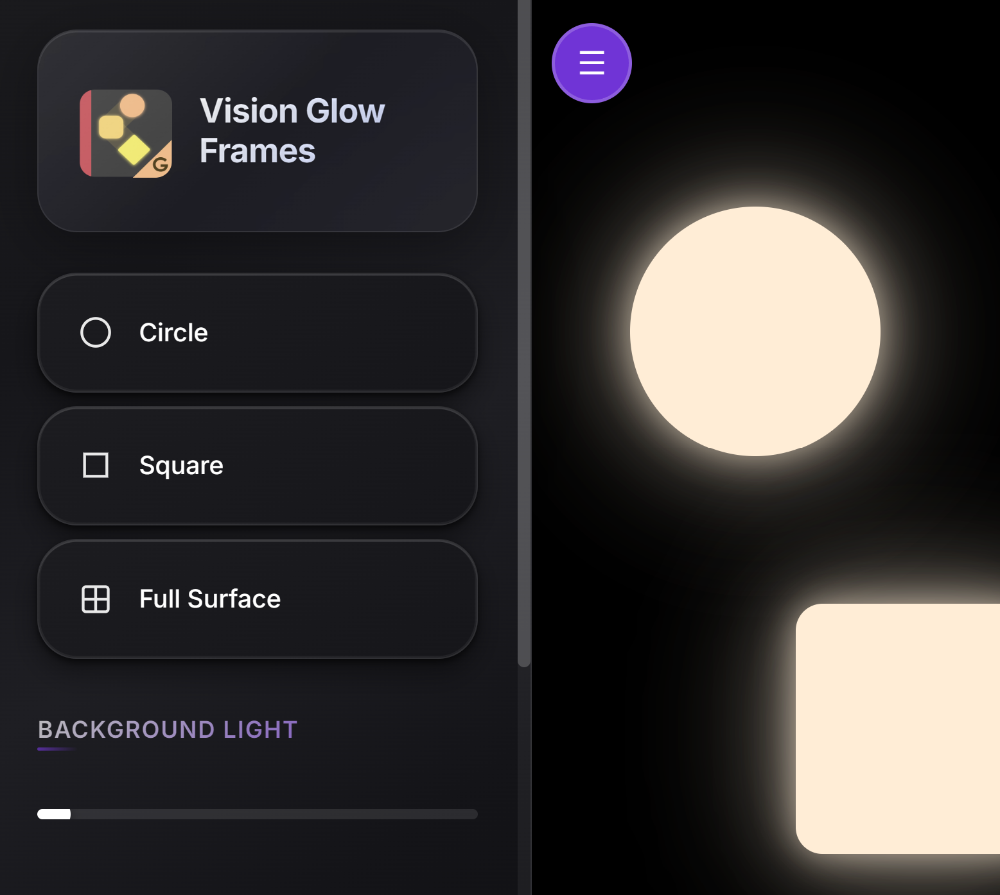
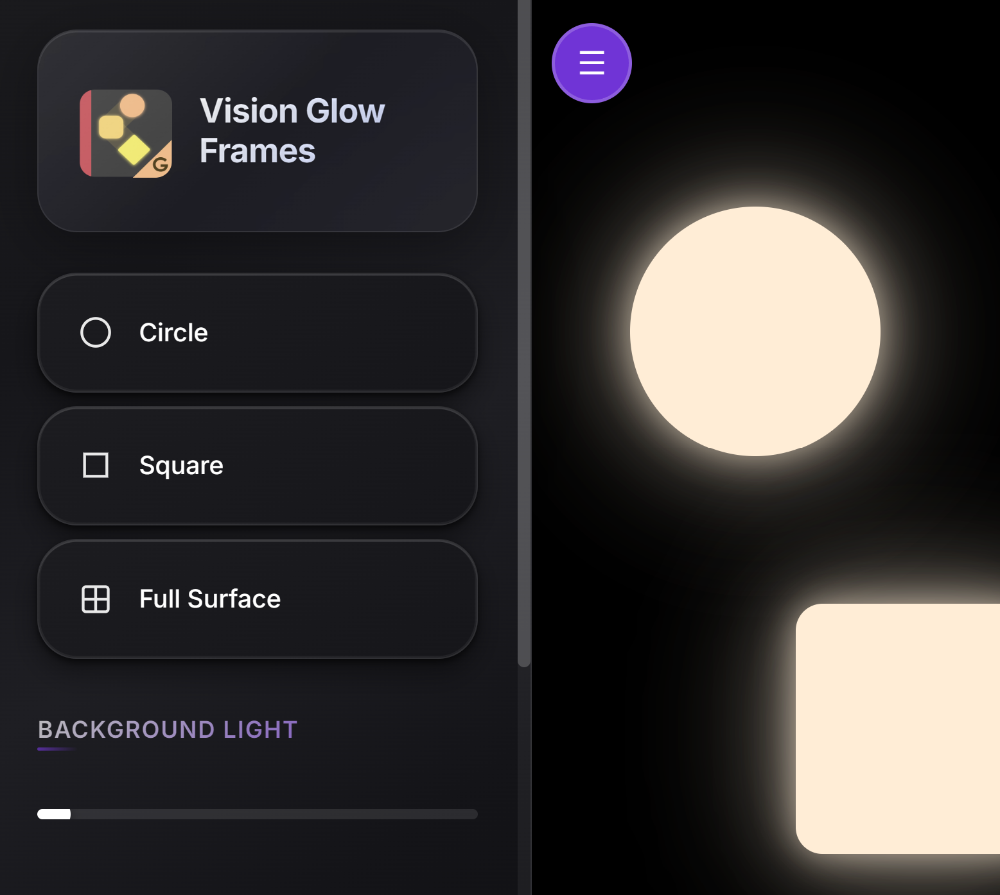

Digital Tools for ECVCs
Web-based applications and resources by Niall Brown
Calculator Apps


CVI Range Rating II Calculator
This calculator assists with double-checking assessment totals for the CVI Range Rating II method. This process is based on the work of Dr. Roman-Lantzy.

Age by Weeks & Category Calculator
A tool for calculating a child's age in weeks, and their age category. The date input has predictive complete, a universal accommodation that speeds up input and accepts multiple date formats.
Braille Apps

Mechanical Braille Writer Simulator
An interactive simulator for practicing input with a Mechanical Braille Writer. This app emulates the features and limitations of a Braille writer to build muscle memory and conserve paper waste.


SixKey - Braille Practice Pad
A minimal Braille writing pad for practicing 6 key input with a computer keyboard. Simple controls are provided for Unicode import and export (.txt) format that can be read in any text reader.

BrailleFlex
Provides flexible key placement for practicing Braille on a tablet.
Single Switch Apps

Cause and Effect Fireworks
An interactive app designed to create visual fireworks effects in response to adapted single switch activation.

Cause and Effect Ball Drop
An app that provides calming, colorful balls that respond to single switch inputs.

AstroBounce
A sensory app where users activate a visual sensory experience using a single switch.


HarmonyHopper
A music scanning toy controlled by an adapted single switch.
Assistive Devices
 

GlowFrames
An app for making a tablet or phone into a light box. Illuminated shapes can be arranged to illuminate translucent materials.

Selection Scanner
A simple auditory scanning app.
Microcontroller Devices
3-Function Cause & Effect Single Switch Port
A microcontroller-based project that offers three different cause-and-effect functions for single switch users.
- Regular Left Mouse Click (click-hold-release)
- Direct Left Mouse Click (click-auto release)
- Timed Left Mouse Click (click-custom timer- auto release)

Experimental Projects

Assistive Device Activation Tester
A tool for testing the activation of assistive devices, ensuring they respond correctly to mouse and touch screen inputs.

Appointment Reminder App
A visual timer that provides alerts for upcoming appointments. Meant to be left open on a desktop computer to give a persistent visual reminder.

GazeCanvas
A minimal image canvas designed to be simple and flexible to import images and text for use with a gaze tracking device overlay. This requires a gaze tracking device with its own overlay software.